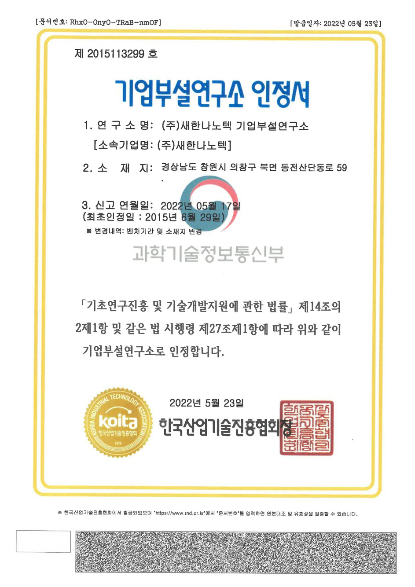
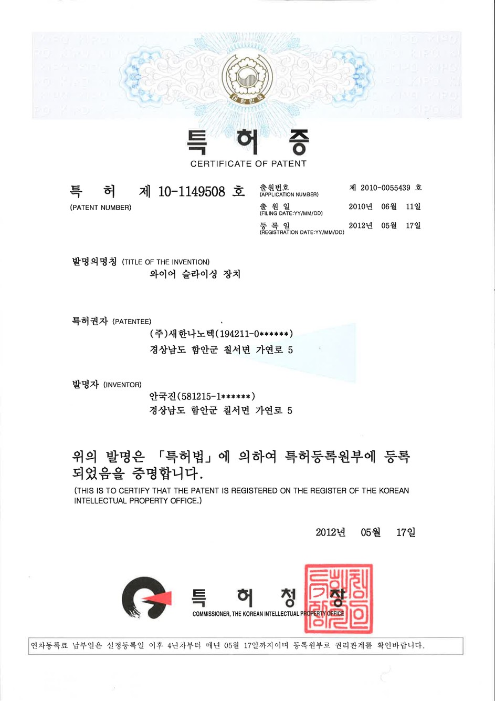
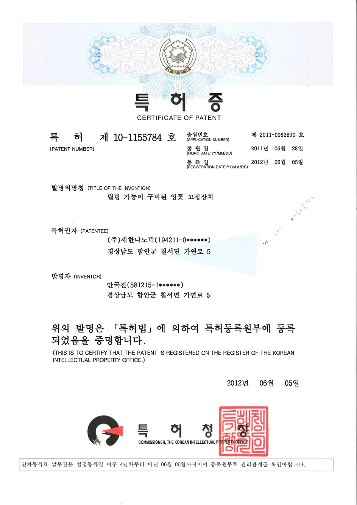
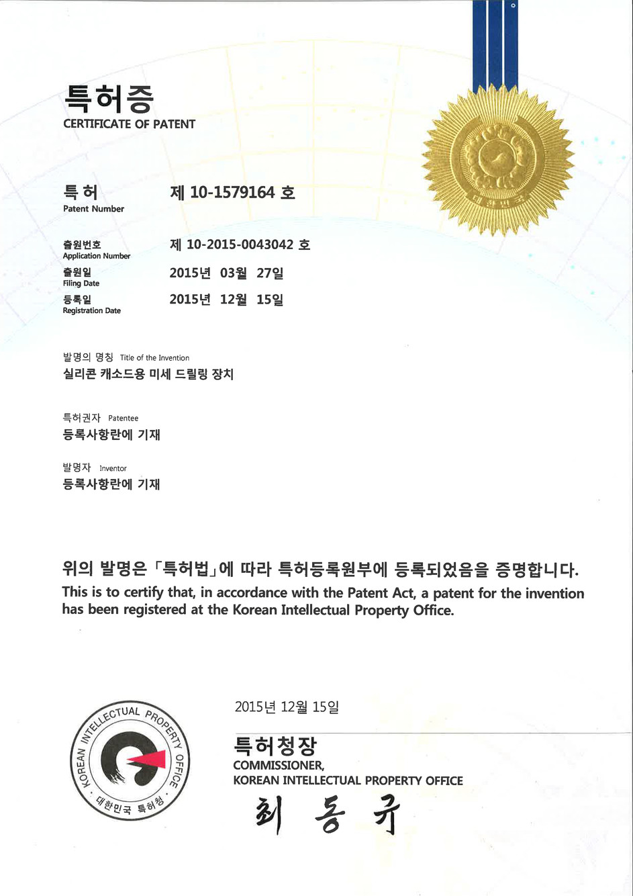
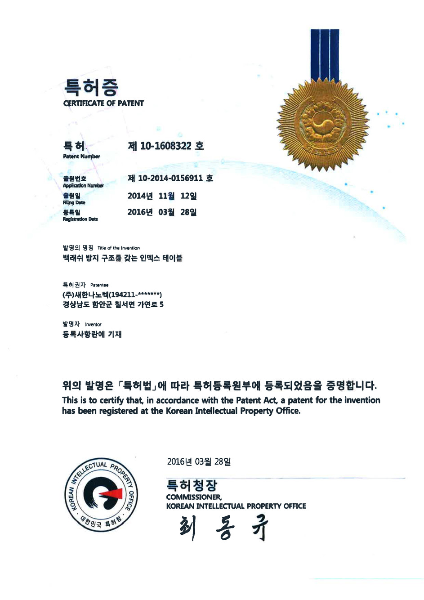
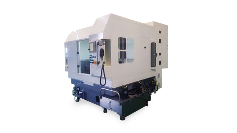

REGISTERED PATENTS
特許ポートフォリオ
クリックすると拡大表示されます。













セハンナノテックの国家R&Dプロジェクト実績のご紹介。
セハンナノテックは2009年以来、認定企業付設研究所を運営しており、精密工作機械の設計と脆性硬質材料の加工において独自技術を開発してまいりました。
当社のR&D能力は、2001年のCNC誤差補正システムから2024年の次世代ナノLED製造装置まで、10件以上の国家研究プロジェクトを通じて実証されております。
セハンナノテックは脆性硬質材料の精密加工技術に特化した認定企業付設研究所を運営しております。装置設計、工程最適化、工具開発、新素材応用研究にわたり研究開発を行っております。
3次元熱誤差補正装置およびロール／フラットパターン加工機 — 韓国機械研究院との共同で開発いたしました。
半導体材料の精密加工に特化した、政府認定研究所を設立いたしました。
韓国特許 第10-1579164号 — シリコン電極向け世界初の同時ダブルスピンドル式マイクロホールドリリングマシン。
韓国初のモーター磁石切断プロジェクトを完遂 — EV向けレアアース磁石加工におけるダイヤモンドワイヤーソーイングを開拓いたしました。
政府主導のナノLEDディスプレイ国家R&Dプロジェクトの主管企業に選定されました。
ダイヤモンドシングルワイヤーソーイングマシンを防衛産業用途向けに開発し、国家研究機関へ納入いたしました。
クリックすると拡大表示されます。







